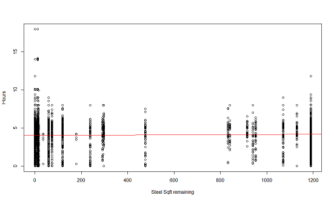
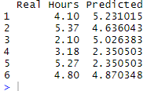
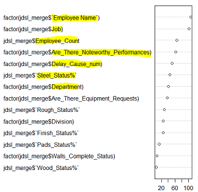
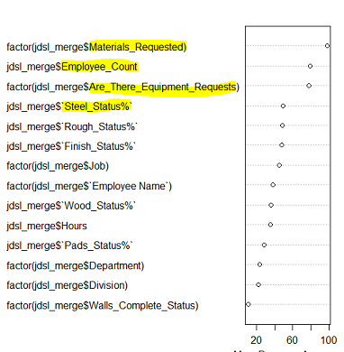

Analysis
A more in depth look at the relationships between the different tables and their values.
Before analyzing the data, or even creating the dashboards, I cleaned the data and created several joined tables. Tableau has an easy to use interface for joining tables and in R I used the 'dplyr' library to perform SQL like joins on the data.
The relationship between the Sqft remaining/ Total beginning Sqft and the time to complete a wall
Looking at the dashboards it is not immediately apparent as to whether the total Sqft of resources needed on a project has a strong effect on the time taken to complete a job (which it intuitively would). Intuitively, one would think that it does, but there may be other - more important- factors. Explporing this will help exlpore possible room for improved efficiency.
Below is a table showing the times taken (in days) for each wall to be completed and the total starting Sqft for each resource.
| Wall | Wood Sqft | Wood Start | Wood End | Wood Completion | Steel sqft | Steel Start | Steel End | Steel Completion |
|---|---|---|---|---|---|---|---|---|
| Wall A Woodpine | 1189 | 06/18/19 | Unknown | Unknown | 1189 | 05/23/19 | 05/30/19 | 7 |
| Wall B Woodpine | NA | Unknown | Unknown | Unknown | NA | Unknown | 05/28/19 | Unknown |
| Wall A Azmar | 1360 | 05/16/19 | Unknown | 6 | 292 | Unknown | 05/16/19 | Unknown |
| Wall B Azmar | Unknown | Unknown | 05/31/19 | Unknown | Unknown | Unknown | 05/28/19 | Unknown |
| Wall P Cherrytown | 840 | 05/07/19 | 05/12/19 | 7 | 840 | 05/01/19 | 05/14/19 | 13 |
See full table HERE.
I formalize this relationship with a correlation analysis in R to understand the relationship between nubmer of days taken to complete a portion of wall and the starting Sqft.
However, the data set is not compelte enough to make a confident conclusion. It appears that that the Sqft remaining do NOT have a large correlation with the time taken to complete a job. However, it does appear that the number of walls on a given project does increase the time taken for completion (intuitively this makes sense).
Is it possible to predict Employee Hours on a given task?
Using only the tables provided I generated models to predict the time each employee would spend (in hours) on any given task.
I began by exploring the relationship between Task/Job, Division, Department, Project, Foreman, etc and Hours worked by an individual through several linear regression models.
However, linear regression models were not explaining much of the variance in the data (thus not predicting well) likely in part because most of the variables are non-numeric (ex: Project name or task name).
Here is an example of what the linear model looks like with only one variable (Steel Status) used to predict the number of hours. In actuality I used about a dozen dimensions in the model and it wouldn't be practical to visualize. As you can see though the prediction is not matching the data very well.
Below is a very small sample of some of the predictions along side the real values for the linear models.
After getting poor results via linear regression I applied a 'random forest model' to see if there would be an improvement in performance. If you want to learn more about Random Forests please check out this link.
Here is a sample of some of the predictions along side the real values for the random forest model.

The random forest model did explain more of the variance than the liner regression models; however, the prediction was no better than simply guessing the average number of hours for each task. More information would be required to improve the performance further. Other models could be tested as well such as SVM.
Below is a listing of what the model thought were the most important variables (columns) for predicting the hours worked. The most important are at the top. Since the random forest model was no better than guessing the average, the importance ranking should be taken with a large grain of salt.
Is it possible to predict Noteworthy Performances or Materials requested?
Similar to the above analysis I began with by exploring general linear models. This time using logistic regression models since this is a classification problem. But I have not included the results here as I ran into similar limitations with logistic regression as I did with linear regression (see R code for more).
After exlporing logistic regeression I moved on again to Random Forsets which performed incredibly well.
Using almost all possible factors, the random forest model was able to correctly 'predict' whether there would be Noteworthy Performaces or Materials Requested more than 90% of the time!
Below is a screen shot of the important variables of importance for predicting Noteworthy Performances.
And here are the importance variables for predicting Materials_Requested.

You can notice that both models have the other variable listed as very important (the model predicting Materials_requested lists Noteworthy Performances as very important and vis versa for the other model). These tells us there is a strong link between Noteworthy Performances and when Materials are requested. The other important variables that models share are Steel Status and Employee Count. So the number of employees on a task and the current remaining amount of steel are fairly correlated with material requestes and performances.
To view R scripts used to clean, organize, and analize the data please click here.